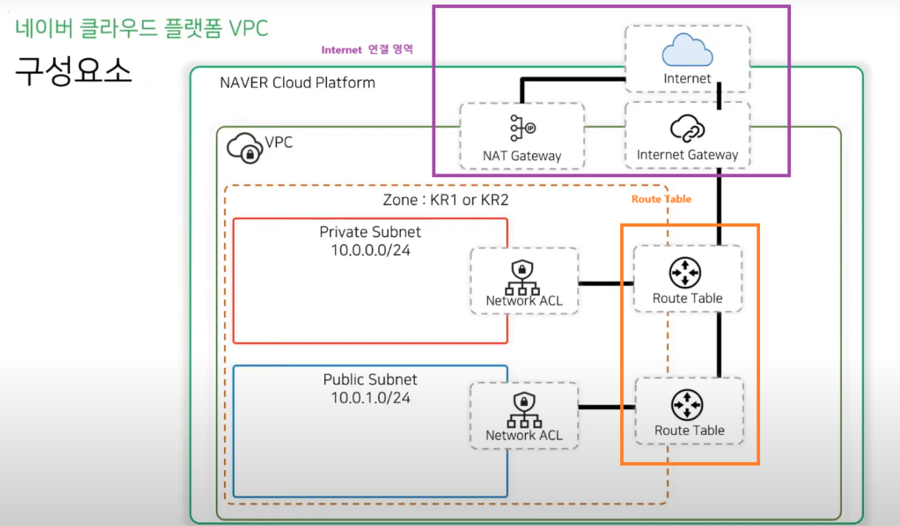

- 기본적으로 VPC가 존재한다.
- 인터넷을 연결하는 하려면 NAT Gateway가 필요하다.
- public subnet을 이용하는 경우에는 Internet Gateway가 기본적으로 연결이 되어 있기 때문에 외부 통신이 가능하다.
- 또한 외부에서 이 subnet에 접근이 가능하다.
- Private Subnet (10.0.0.0/24):
- 내부적으로만 접근 가능한 네트워크입니다.
- NAT Gateway를 통해 외부 인터넷과 통신합니다(Outbound 트래픽만 가능).
- Public Subnet (10.0.1.0/24):
- 외부에서 직접 접근할 수 있는 네트워크입니다.
- Internet Gateway를 통해 인터넷과 직접 연결됩니다